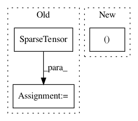

09e572cef1dc655bfc5255ecd0b3787512609e3d,torch_geometric/nn/functional/graph_conv.py,,graph_conv,#Any#Any#Any#Any#Any#,27
Before Change
edge_attr *= degree[col]
edge_attr = torch.cat([edge_attr, degree * degree], dim=0)
edge_index = add_self_loops(edge_index, n)
adj = SparseTensor(edge_index, edge_attr, torch.Size([n, n]))
// Convolution.
output = SparseMM(adj)(torch.mm(x, weight))
After Change
row, col = edge_index
num_nodes, e = x.size(0), row.size(0)
edge_attr = x.new_full((e, ), 1) if edge_attr is None else edge_attr
deg = degree(row, num_nodes, dtype=x.dtype, device=x.device).pow_(-0.5)
// Normalize and append adjacency matrix by self loops.
In pattern: SUPERPATTERN
Frequency: 3
Non-data size: 3
Instances
Project Name: rusty1s/pytorch_geometric
Commit Name: 09e572cef1dc655bfc5255ecd0b3787512609e3d
Time: 2018-04-30
Author: matthias.fey@tu-dortmund.de
File Name: torch_geometric/nn/functional/graph_conv.py
Class Name:
Method Name: graph_conv
Project Name: rusty1s/pytorch_geometric
Commit Name: 0229b609cd2880d9d5ba439fc45bacc4f3205c6e
Time: 2020-06-27
Author: matthias.fey@tu-dortmund.de
File Name: torch_geometric/data/cluster.py
Class Name: ClusterData
Method Name: __init__
Project Name: rusty1s/pytorch_geometric
Commit Name: 7b8716403efd3cee3fd62f50d2e2e4b2183a90b6
Time: 2018-04-30
Author: matthias.fey@tu-dortmund.de
File Name: torch_geometric/nn/functional/cheb_conv.py
Class Name:
Method Name: cheb_conv